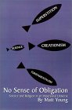

|
SAB Bookstore
-About the Bible
-Atheism
-Bibles
-Children
-Christian Apologetics
-Christianity
-Christian Science
-Church/State
-Creation/Evolution
-DVDs
-Fiction
-Freethought
-Homosexuality
-Humor
-Islam
-Jehovah's Witnesses
-Jesus
-Magazines
-Mormonism
-Movies
-Music
-New Testament
-Old Testament
-Philosophy
-Politics
-Prophecy
-Quran
-Religion
-Science
-Sex in the Bible
-Skepticism
-Women
|
Science
|
|
A Devil's Chaplain : Reflections on Hope, Lies, Science,
and Love
Richard Dawkins
|

The Ghost in the Universe: God in Light of Modern Science
Taner Edis
|

The Vanquished Gods : Science, Religion, and the Nature of Belief
Richard H. Schlagel

Not By Design
Victor J. Stenger
|

Has Science Found God? The Latest Results in the Search for Purpose in
the Universe
Victor J. Stenger
|

Unintelligent Design
Mark Perakh
|

God, the Devil, and Darwin: A Critique of Intelligent Design Theory
Niall Shanks

Darwin, His Daughter, and Human Evolution
Randal Keynes
|
Life Everywhere : The Maverick Science of Astrobiology
David Darling
|
Darwin's Ghost
Stephen Jones
|

Noah's Flood : The New Scientific Discoveries About the Event That
Changed History
Walter Pitman, William B.F. Ryan

The Pony Fish's Glow :
And Other Clues to Plan and Purpose in Nature
George C. Williams
|

No Sense of Obligation : Science and Religion in an Impersonal
Universe
Matt Young
|
|
|
|
|
| |
|
|
|
|
|
|
|
|
|
|
|
|
| | | |
|